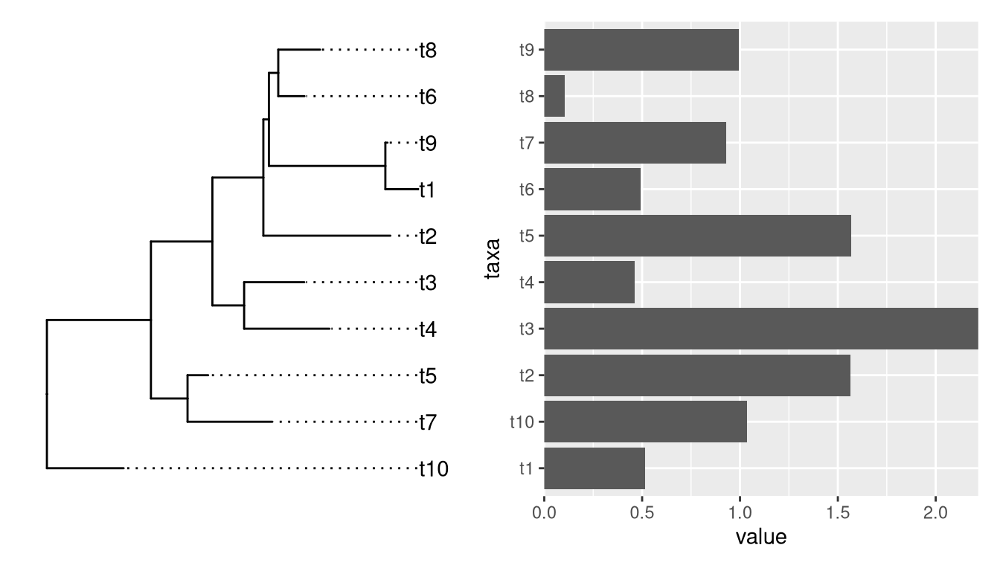

4 Align Associated plots
For many times, we are not just aligning plots as what cowplot and patchwork did. We would like to align associated information that requires axes to be exactly matched in subplots.
4.1 A first glance
library(ggplot2)
library(aplot)
p <- ggplot(mtcars, aes(mpg, disp)) + geom_point()
p2 <- ggplot(mtcars, aes(mpg)) +
geom_density(fill='steelblue', alpha=.5) +
ggtree::theme_dendrogram()
p3 <- ggplot(mtcars, aes(x=1, y=disp)) +
geom_boxplot(fill='firebrick', alpha=.5) +
theme_void()
ap <- p %>%
insert_top(p2, height=.3) %>%
insert_right(p3, width=.1)
## you can use `ggsave(filename="aplot.png", plot=ap)` to export the plot to image file
print(ap) # or just type ap will print the figure4.2 Aligning plots with a tree
library(ggtree)
set.seed(2020-03-27)
x <- rtree(10)
d <- data.frame(taxa=x$tip.label, value = abs(rnorm(10)))
p <- ggtree(x) + geom_tiplab(align = TRUE) + xlim(NA, 3)
library(ggstance)
p2 <- ggplot(d, aes(value, taxa)) + geom_colh() +
scale_x_continuous(expand=c(0,0))
library(patchwork)
p | p2
Althought patchwork did a good job at aligning y-axes among the two plots, the output is not what we want if the bar heights are associated with external nodes on the tree. It is not so obvious for an ordinary user to extract the order of tip label from the tree to re-draw the barplot.
If we insert a ggtree object in aplot, it will transform other plots in the same row (insert_left and insert_right) or same column (insert_top and insert_bottom) based on the tree structure.
